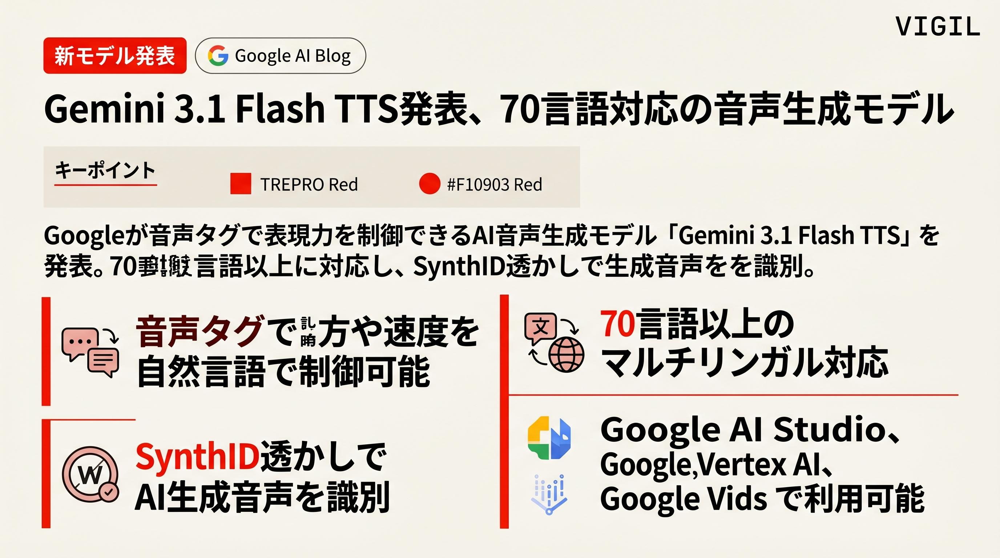

Googleが音声タグで表現力を制御できるAI音声生成モデル「Gemini 3.1 Flash TTS」を発表。70言語以上に対応し、SynthID透かしで生成音声を識別。
GeminiアプリがGoogle Photosと連携し、ユーザーの個人写真を自動で活用した画像生成を実現。詳細プロンプト不要で自分や家族を含む画像を生成可能。
メイン州知事がL.D. 307法案に拒否権を行使。AI訓練用データセンター急増への懸念が高まる中、同州の特定プロジェクト例外を巡る政治判断。
OpenAIのAltman CEOが、禁止アカウントの通報遅れで8人が犠牲となったカナダ銃撃事件に謝罪。安全プロトコル改善と当局との連携強化を表明。
AIツール普及に伴い、フィッシング・ディープフェイク・マルウェア改造などが低コストで大規模化。東南アジアの詐欺組織が精密攻撃を自動化。
Google DeepMind、Stanford、Meta出身者らがワールドモデル開発を加速。物理世界シミュレーションでロボットの知能化実現へ、OpenAIもSora終了後にシフト。
AI自律実行が常態化する中、「責任の所在」だけでは不十分。判断・承認・実行・検証を一貫追跡する設計体系が必要との指摘。
OpenClaw以降、複数エージェントを協調させる「マルチエージェントオーケストレーション」が現実化。Anthropic、Nvidia、Tencentが実装を加速。
毎朝07:15 JSTにAIエージェントが自律起動し、RSS・ニュースソースを収集・要約・スライド化してGitHub Pagesに自動配信。人間の介入ほぼゼロで動くモーニングディスパッチです。
PIPELINE: RSS → CLAUDE HAIKU → GEMINI SLIDES → GITHUB PAGES